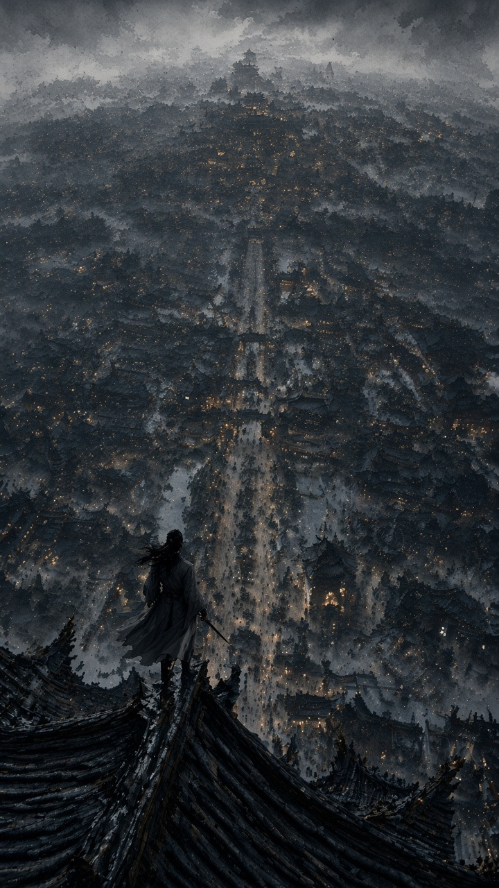
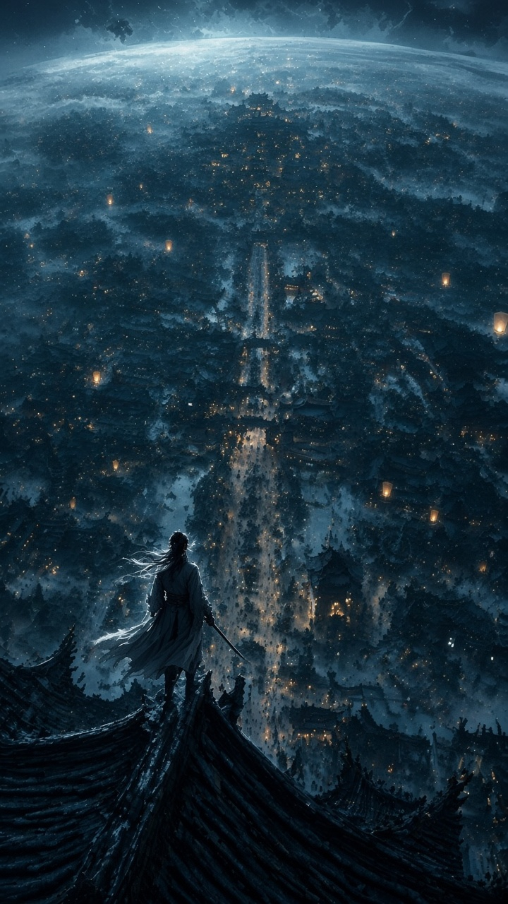
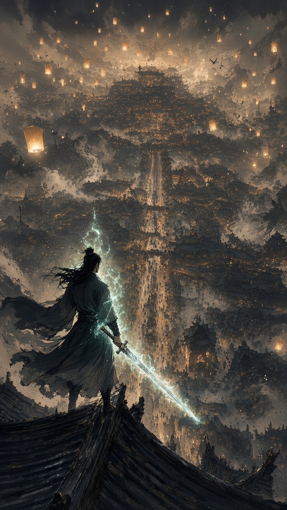
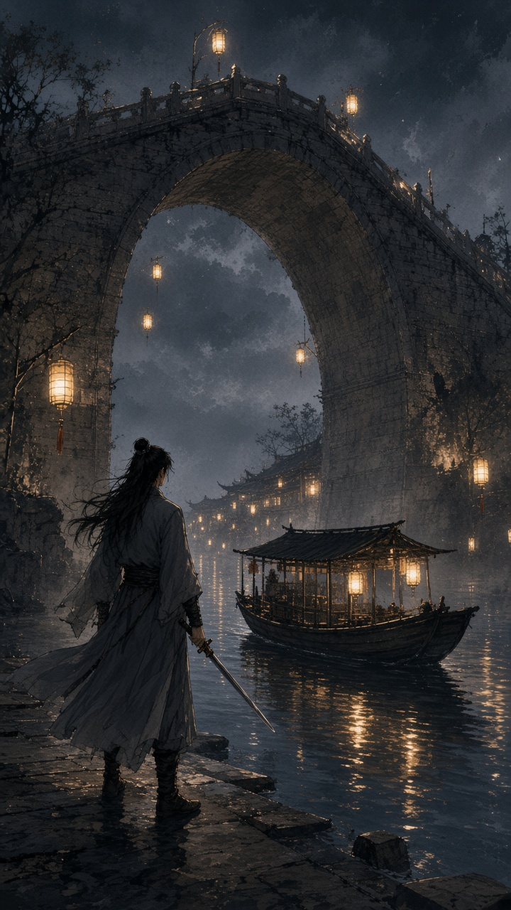
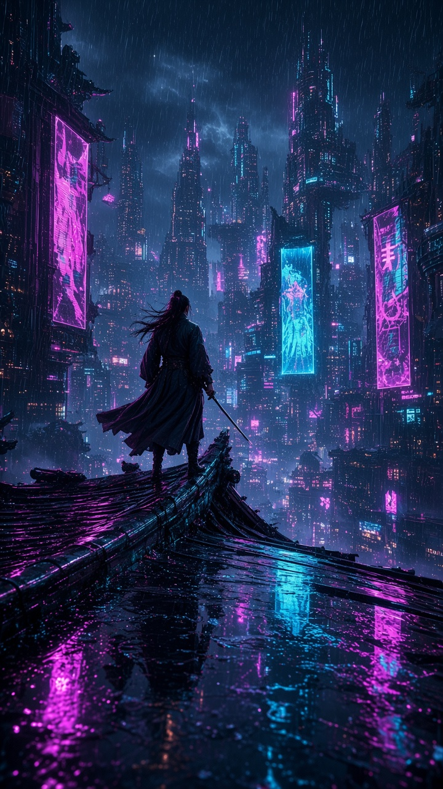

案例 01 · 仙侠不夜城

原图 · 离线旁证 · c9.26 · l9.12 · p7.0 · t6.75 · s7.61

离线旁证 · c9.26 · l7.1 · p7.0 · t7.59 · s7.1
提示词
仙侠水墨夜色风：锁视角与姿态，仅微修局部质感| 仙侠水墨夜色风：保持俯瞰孤侠背影站位，微修质感| 低强度修瑕 (low ≤20%): 保持俯瞰孤侠背影站位，仅精修局部质感；仙侠水墨夜色风| 最优方向：近景瓦当咬合与剑身细冷钢高光微锐| 约束：保持原图画风笔触与色板；不改男侠背影站位与俯瞰构图；严禁增删飞檐楼阁与暖金灯笼布局；保持原图男性持剑侠客身份，禁止改成女侠

离线旁证 · c9.26 · l7.1 · p7.0 · t7.59 · s9.12
提示词
仙侠水墨夜色风：保画风与机位，小幅姿态/局部布局；柔化光影与留白层次| 仙侠水墨夜色风：保画风与主体，柔化光影层次| 中幅提升 (medium 25%–45%): 保持画风色板与主体，强化光雾纵深与介质质感；仙侠水墨夜色风；可轻度点缀风格内叙事道具，不锁死道具归零| 最优方向：青黛夜雾纵深；衣袂冷银轮廓光；中轴暖金灯火冷暖；可轻度点缀升空灯点| 约束：不改机位与镜头视角；不增删主体元素清单；不做整体 recompose / 换景别故事；保持原图画风笔触与色板；保持原图性别、物种、年龄段与核心外观

离线旁证 · c9.26 · l9.12 · p7.0 · t7.59 · s9.12
提示词
仙侠水墨夜色风：保媒介与身份，提升光影张力；可加风格内叙事点缀| 仙侠水墨夜色风：保媒介与身份，青银剑气·升空孔明灯·万家灯火体积光| 高强度跃升 (high 50%–80%): 保持剑孤侠与万家灯火夜城媒介基因，升级戏剧光与叙事——青银剑气、升空孔明灯、冷暖灯火碰撞、体积光；可加风格内叙事点缀，不换主体身份；禁止平庸平移| 最优方向：青银剑气+升空孔明灯+万家灯火体积光+冷暖碰撞（可加风格内叙事点缀）| 约束：保持原图核心艺术媒介与画风基因；保持原图性别、物种、年龄段与核心外观；可加风格内叙事点缀，不换主体身份

离线旁证 · c9.26 · l7.61 · p7.0 · t7.59 · s9.12
提示词
仙侠水墨夜色风：保画风色板，按「从高空飞檐俯瞰改为底层运河水道乌篷船与低机位仰高拱石桥全景」重构机位| 仙侠水墨夜色风：保画风色板，按「运河水道乌篷船·低机位仰高拱石桥」重构机位| recompose: 保画风色板与持剑男侠身份，改为运河水道乌篷船低机位仰高拱石桥全景；禁止旧俯瞰飞檐DNA| 约束：保持原图画风笔触与色板；保持原图性别、物种、年龄段与核心外观；不偏离指定构图方向

离线旁证 · c9.26 · l9.12 · p7.0 · t7.59 · s9.12
提示词
赛博霓虹雨夜不夜城：AR+剪影，湿铬飞檐·品红青全息·积水反射 | 大改 style_jump: 仅保留持剑孤侠与万家灯火夜城剪影与 9:16；风格圣经跳变赛博霓虹雨夜——湿铬飞檐、品红青全息旗、低机位积水反射；禁止混装旧俯瞰阳台机位与保色板套话 | 最优方向：9:16+持剑孤侠剪影；赛博霓虹雨夜圣经（勿混阳台机位） | 约束：画幅 9:16；仅保留主体剪影；风格圣经按目标大跳；禁止混装旧机位与保色板套话